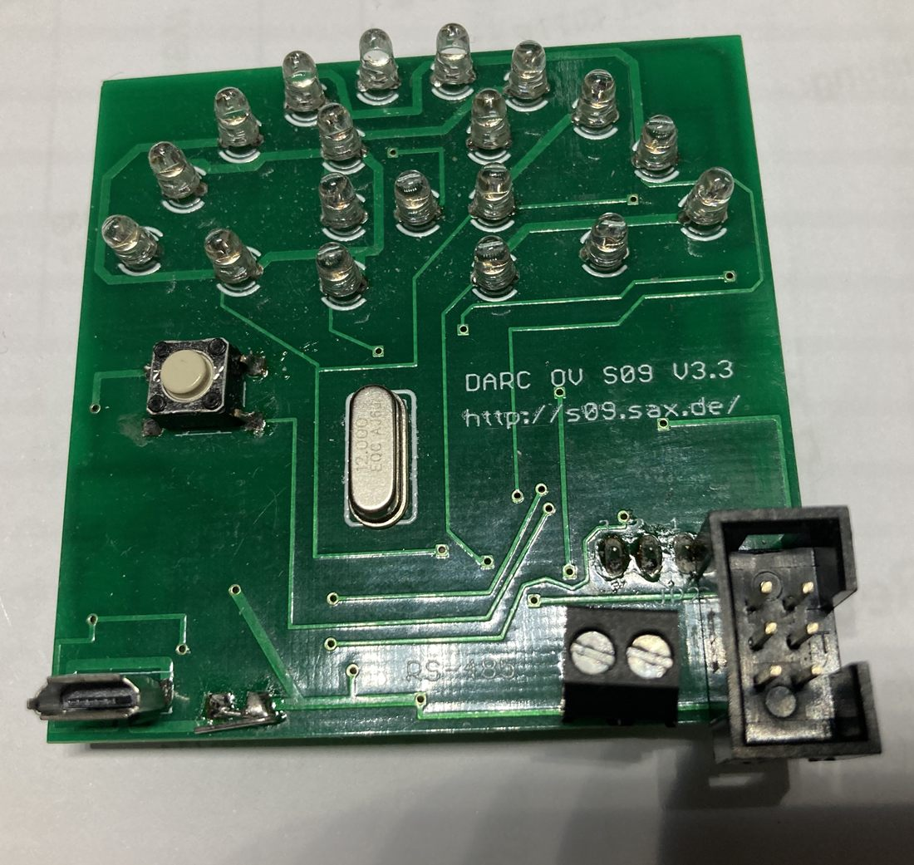
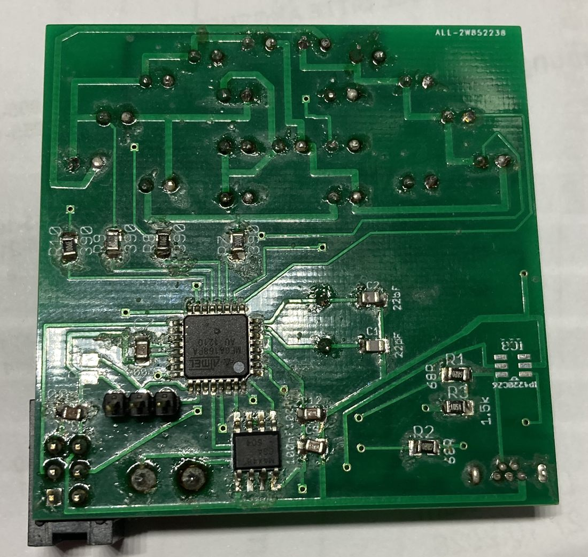

Die Idee zu diesem etwas aufwendigeren Bausatz baut auf unserem LED-Thermometer auf. Für das Medienfestival wollten wir einen Bausatz anbieten, der zusätzlich eine Spielfunktion enthält.
Für das Zusammenbauen braucht man etwas mehr Zeit (etwa 60 bis 120 Minuten). Dafür hat man mit der fertigen Platine eine ganze Menge Möglichkeiten: Sie ist Thermometer, elektronischer Würfel und Spielbrett für zwei Personen – auf Wunsch sogar mit zwei vernetzten Platinen.
Die Firmware enthält vier Funktionen:
Alle Funktionen lassen sich erweitern, und neue können hinzukommen. Mit diesem Bausatz möchten wir euch ermutigen, eure eigenen Ideen auszuprobieren. Wer nicht programmieren kann, teilt uns seine Idee mit – dann setzen wir sie gemeinsam um.
| LED | Farbe | Aufgabe |
|---|---|---|
| 1 – 2 | blau | LED-Band: Temperatur oder Punktestand |
| 3 – 5 | grün | |
| 6 – 8 | orange | |
| 9 – 10 | rot | |
| 11 – 17 | orange | Würfelfeld (7 Augen, LED 11 = Mitte) |
| 18 | rot | Spieler-LED Spieler 1 |
| 19 | blau | Spieler-LED Spieler 2 |
| Anschluss | Bedeutung |
|---|---|
| JP3 (Micro-USB) | Versorgung 5 V, z. B. aus einem USB-Netzteil oder vom PC. D+/D− liegen über R1/R2 (68 Ω) an PC1/PC0, R3 (1,5 kΩ) ist der USB-Pull-up – vorbereitet für einen USB-Bootloader, von der aktuellen Firmware nicht genutzt. |
| 485A (+) / 485B (−) | RS485-Bus. Bei zwei Platinen A mit A und B mit B verbinden, dazu GND. |
| JP1 (AVR-ISP-6) | Programmieren über ISP; im Betrieb Steckplatz für die Funktions-Jumper |
| JP2 | optionaler 1-Wire-Sensor DS18B20 oder DS1820 (Daten an PC2, Versorgung über PC3, 4,7 kΩ Pull-up nach PC3 – bei Rev. 3.3 fälschlich nach GND, siehe Kapitel 12) |
Das Würfelfeld hat sieben LEDs: Mitte, Mitte links und rechts sowie die vier Ecken. Damit sind die Augenzahlen 1 bis 7 darstellbar.
Die Funktion wird beim Einschalten über Jumper am ISP-Stecker JP1 gewählt. Einen Jumper während des Betriebs umzustecken hat keine Wirkung – erst nach dem nächsten Einschalten.
| Jumper | Anzeige | Funktion |
|---|---|---|
| keiner | 1 | Temperaturanzeige |
| 4 – 6 (MOSI–GND) | 2 | Würfel 1 – 6 |
| 3 – 4 (SCK–MOSI) | 3 | Würfel 1 – 7 |
| 1 – 3 (MISO–SCK) | 4 | Zweispieler, ein Würfel |
| 4 – 6 und 1 – 3 | 5 | Zweispieler, zwei Würfel über RS485 |
Ohne Jumper arbeitet die Platine als Thermometer. Beim Einschalten prüft die Software selbst, ob an JP2 ein externer Sensor steckt:
Es leuchtet immer genau eine LED, jede LED steht für 2 °C:
| LED | 1 | 2 | 3 | 4 | 5 | 6 | 7 | 8 | 9 | 10 |
|---|---|---|---|---|---|---|---|---|---|---|
| °C | bis 14 | 14–16 | 16–18 | 18–20 | 20–22 | 22–24 | 24–26 | 26–28 | 28–30 | ab 30 |
Leuchten LED 1 und LED 10 gleichzeitig, ist der externe Sensor ausgefallen.
Gemessen wird alle 5 Sekunden, ein Tastendruck löst sofort eine Messung aus.
Nach jeder Messung sendet die Platine eine Textzeile (9600 Baud, 8N1):
T=21.5 ext externer Sensor T=22.0 int interner Sensor T=Fehler Sensor antwortet nicht
Mit Jumper 4–6 würfelt die Platine von 1 bis 6, mit Jumper 3–4 von 1 bis 7 – das siebte Auge ist dank der sieben LEDs im Würfelfeld möglich.
Mit Jumper 1–3 spielen zwei Personen abwechselnd mit demselben Würfel „20 gewinnt“: Wer zuerst 20 Punkte erreicht, hat gewonnen.
| Anzeige | Bedeutung |
|---|---|
| beide Spieler-LEDs blinken langsam | bereit, Spieler 1 beginnt mit dem ersten Tastendruck |
| Spieler-LED 18 bzw. 19 leuchtet | Spieler 1 bzw. 2 hat zuletzt gewürfelt |
| LED-Band | Punktestand dieses Spielers (siehe Tabelle unten) |
| ganzes Band und Spieler-LED blinken | dieser Spieler hat gewonnen |
| Punkte | Anzeige |
|---|---|
| 0 – 10 | LED 1 blinkt |
| 11 – 19 | Balken aus (Punkte − 10) LEDs, z. B. 14 Punkte = LED 1 bis 4 |
| ab 20 | alle 10 LEDs blinken – gewonnen |
Nach Spielende startet der nächste Tastendruck ein neues Spiel, und Spieler 1 würfelt sofort.
Jetzt hat jeder Spieler seine eigene Platine. Beide Boards werden über RS485 verbunden und mit Jumper 4–6 und 1–3 gleichzeitig eingeschaltet. Gespielt wird wieder „20 gewinnt“.
| Anzeige | Bedeutung |
|---|---|
| eigene Spieler-LED blinkt | du bist dran |
| eigene Spieler-LED leuchtet | der Gegenspieler ist dran, oder das Spiel ist beendet |
| beide Spieler-LEDs blinken langsam | kein Spiel – Taster startet eines |
| Spieler-LEDs blinken schnell im Wechsel | keine Verbindung zum anderen Board |
| LED-Band | eigener Punktestand (Anzeige wie in Kapitel 6) |
| Würfelfeld | letzter Wurf, eigener oder der des Gegners |
Die Schnittstelle arbeitet mit 9600 Baud, 8 Datenbits, keine Parität, 1 Stoppbit. Der MAX481 ist halbduplex: Pin PC5 schaltet zwischen Senden (High) und Empfangen (Low) um. Die Firmware schaltet erst nach dem letzten Stoppbit zurück auf Empfang.
Alle Meldungen sind lesbarer Text. Zum Mitlesen genügt ein USB-RS485-Adapter mit einem Terminalprogramm (z. B. PuTTY oder HTerm).
':' Typ Daten (Hex) CRC8 (Hex) CR LF
Der Typ ist ein Buchstabe. Die Daten werden als Hex-Ziffern übertragen. Die CRC8 (Dallas/iButton, wie beim 1-Wire-Bus) läuft über Typ und Daten.
| Typ | Daten (je 1 Byte) | Bedeutung |
|---|---|---|
| Z | Spiel-ID, Zug-Nr., Absender, letzter Spieler, Wurf, Punkte Sp. 1, Punkte Sp. 2 | Ein Wurf. Wird alle 250–400 ms wiederholt, bis die Quittung kommt. |
| Q | Spiel-ID, Zug-Nr. | Quittung für einen Zug |
| A | – | Anfrage nach dem Einschalten: „Läuft schon ein Spiel?“ |
| S | wie Z | Aktueller Spielstand als Antwort auf A, ohne Quittung |
Jede Z- und S-Nachricht enthält den kompletten Spielstand. Geht eine Nachricht verloren, bringt die nächste beide Boards wieder auf denselben Stand. Starten beide Spieler im selben Moment ein Spiel, setzt sich das Spiel mit der höheren Spiel-ID durch.
:A18 Board 2 nach dem Einschalten: läuft ein Spiel?
:Z3A010000040400BC Board 1 (Spieler 1) würfelt eine 4, Stand 4 : 0
:Q3A0144 Board 2 quittiert Zug 1
(die letzten beiden Hex-Ziffern sind jeweils die CRC8)
Aufschlüsselung der Z-Nachricht: 3A Spiel-ID, 01 Zug 1, 00 Absender Spieler 1, 00 letzter Wurf von Spieler 1, 04 Wurf, 04 / 00 Punkte, BC CRC8.
Format: '>' gefolgt von vier Binärbytes: Adresse (13), Kommando, Wert, Prüfbyte (= Adresse).
| Kommando | Wirkung |
|---|---|
| 0 | Softwareversion ausgeben |
| 1 | Betriebsart umschalten (Wert 0 – 4) |
| 3 | Tastendruck simulieren |
Der Quellcode liegt im Ordner Software:
| Datei | Inhalt |
|---|---|
| thermo.c | Start, Jumperabfrage, Taster, Hauptschleife, Temperaturanzeige |
| thermo.h | Einstellungen, Pinbelegung, gemeinsame Deklarationen |
| led.c | LED-Multiplexer mit PWM, Augenbilder, LED-Band |
| spiel.c | Würfel, Zweispieler, RS485-Spiel, Zufallsgenerator |
| rs485.c | Senden und Empfangen per Interrupt, Rahmenprotokoll |
| 1wire.c | Ansteuerung DS18B20 / DS1820 |
Die Platine nimmt den ATmega168P oder den pinkompatiblen ATmega328P auf (gleiches TQFP32-Gehäuse, doppelter Speicher). Die Firmware ist für beide gleich; nur die Einstellungen beim Bauen und die Fuses unterscheiden sich. Neue Platinen werden mit dem ATmega328P bestückt.
| Controller | Signatur | PlatformIO-Umgebung |
|---|---|---|
| ATmega328P | 1E 95 0F | atmega328p_baremetal (Standard) |
| ATmega168P | 1E 94 0B | atmega168p_baremetal (erste Platine) |
Den Ordner Software in VS Code öffnen. Die platformio.ini ist für 12 MHz und den Programmer DIAMEX ISP USB-Prog NG eingerichtet. Die Umgebung (Controller) wird unten in der Statusleiste von VS Code gewählt.
Befehlszeile (im Ordner Software):
platformio run -e atmega328p_baremetal -t fuses Fuses setzen (einmalig) platformio run -e atmega328p_baremetal -t upload Firmware aufspielen
Wichtige Einträge der platformio.ini:
upload_protocol = stk500v2
upload_port = COM3
upload_speed = 115200
upload_flags = -e ; Chip vor dem Schreiben löschen
-P$UPLOAD_PORT ; Port auch für "Set Fuses"
-b$UPLOAD_SPEED
make MCU=atmega328p Firmware bauen (build/led_wuerfel.hex) make UART_DEBUG=1 mit Debug-Befehlen über RS485 make flash mit avrdude programmieren
| Fuse | ATmega328P | ATmega168P | Bedeutung |
|---|---|---|---|
| Low | 0xFF | 0xFF | externer Quarz, Oszillatorbereich 8–16 MHz, kein Teiler durch 8 – Takt 12 MHz. Die erste 168P-Platine stand ab Werk auf 0xFD (3–8 MHz) und ist umgestellt. |
| High | 0xD9 | 0xDF | ISP aktiv; EESAVE nicht gesetzt (EEPROM wird beim Löschen mitgelöscht); kein Bootloader-Start |
| Extended | 0xFD | 0xF9 | 328P: Brown-out bei 2,7 V (schützt das EEPROM beim Ein- und Ausschalten). 168P: Start ab Adresse 0, Brown-out aus. |
| Lock | 0xFF | 0xFF | keine Sperren |
| Technische Daten | |
|---|---|
| Versorgung | 5 V über Micro-USB |
| Controller | ATmega328P (32 KB Flash, 2 KB RAM) oder ATmega168P (16 KB / 1 KB) |
| Takt | 12 MHz Quarz (HC18U-V) |
| Firmware | ca. 5,1 KB Flash, 174 Byte RAM |
| LEDs | 19 Stück, Multiplex 4 × 5, 310 Hz Bildrate |
| Schnittstelle | RS485, MAX481, 9600 Baud |
| Sensor | intern oder DS18B20 / DS1820 |
| Zeitbasis | |
|---|---|
| Timer 0 | LED-Multiplexer, Helligkeit per PWM |
| Timer 1 | frei laufend 12 MHz, Zufallsquelle |
| Timer 2 | 10-ms-Takt der Hauptschleife |
| ADC | interner Sensor (Kanal 8, 1,1 V), Poti an ADC2 |
| Pin | Funktion | Pin | Funktion |
|---|---|---|---|
| PB0 | Kathode LED 11 – 15 | PC4 | Taster (Pull-up intern) |
| PB1 | Kathode LED 6 – 10 | PC5 | RS485 Senden/Empfangen |
| PB2 | Kathode LED 1 – 5 | PC6 | RESET |
| PB3 | MOSI / Jumper | PD0 | RXD (RS485) |
| PB4 | MISO / Jumper | PD1 | TXD (RS485) |
| PB5 | SCK / Jumper | PD2 | Anode LED 5, 10, 15 |
| PB6, PB7 | Quarz 12 MHz | PD3 | Anode LED 4, 9, 14, 19 |
| PC0 | USB D− | PD4 | Anode LED 3, 8, 13, 18 |
| PC1 | USB D+ | PD5 | Anode LED 2, 7, 12, 17 |
| PC2 | 1-Wire Daten / ADC2 | PD6 | Anode LED 1, 6, 11, 16 |
| PC3 | 1-Wire Versorgung | PD7 | Kathode LED 16 – 19 |
Exportiert aus VER_3_3_LED_Thermo.sch mit Eagle 7.7.0 am 21.10.2026, gleiche Bauteile zusammengefasst. Insgesamt 44 Positionen.
| Anz. | Bauteile | Wert | Gehäuse | Bemerkung |
|---|---|---|---|---|
| 1 | IC1 | ATmega328P-AU | TQFP32 | Mikrocontroller; ATmega168P-AU ebenfalls möglich (in der Eagle-Liste als „MEGA68-AU“) |
| 1 | IC2 | MAX481CSA | SO-8 | RS485-Transceiver |
| 1 | IC3 | IP4220CZ6 | SOT-457 (6-pol.) | ESD-Schutz USB, optional |
| 1 | Q1 | 12 MHz | HC18U-V | Quarz |
| 2 | C1, C2 | 22 pF | 0805 | Lastkondensatoren Quarz |
| 4 | C7, C8, C9, C12 | 100 nF | 0805 | Abblockkondensatoren |
| 2 | R1, R2 | 68 Ω | 0805 | USB D+ / D− |
| 1 | R3 | 1,5 kΩ | 0805 | USB-Pull-up |
| 4 | R7, R8, R9, R10 | 390 Ω | 0805 | LED-Vorwiderstände |
| 1 | R11 | 4,7 kΩ | 0805 | 1-Wire-Pull-up (Rev. 3.3: Fehler, siehe Kapitel 12) |
| 1 | F1 | Sicherung | 1206 | USB-Versorgung |
| 3 | LED1, LED2, LED19 | LED 3 mm, blau | THT | Band; LED19 Spieler 2 |
| 3 | LED3 – LED5 | LED 3 mm, grün | THT | Band |
| 10 | LED6 – LED8, LED11 – LED17 | LED 3 mm, orange | THT | Band und Würfelfeld |
| 3 | LED9, LED10, LED18 | LED 3 mm, rot | THT | Band; LED18 Spieler 1 |
| 1 | SW1 | Omron B3FS-1002 | SMD | Taster |
| 1 | JP1 | Wannenstecker 2 × 3 | 2,54 mm | ISP-Stecker / Funktions-Jumper |
| 1 | JP2 | Stiftleiste 1 × 3 | 2,54 mm | optional, 1-Wire-Sensor |
| 1 | JP3 | Würth 614105150721 | Micro-USB | Versorgung 5 V |
| 2 | 485A, 485B | Schraubklemme 2-polig | RM 5,08 mm | RS485 A (+) und B (−); in Eagle als Lötpads |
Dazu für den Betrieb: Jumper (2,54 mm), USB-Kabel mit Micro-USB-Stecker und 5-V-Netzteil, optional ein DS1820 oder DS18B20.
Die Platine ist auf beiden Seiten bestückt. Auf der Oberseite (Seite mit dem Aufdruck „DARC OV S09 V3.3“) sitzen die bedrahteten Bauteile, dazu die Micro-USB-Buchse und die Sicherung F1. Die übrigen SMD-Bauteile sitzen auf der Unterseite. Die Pläne sind maßstäblich nach dem Eagle-Board gezeichnet (Raster 55 × 55 mm).


| Bauteil | Wert | Hinweis |
|---|---|---|
| IC1 | ATmega328P-AU | TQFP32, Raster 0,8 mm; Punkt (Pin 1) wie in Bild 8 |
| IC2 | MAX481CSA | SO-8; Punkt bzw. Kerbe (Pin 1) wie in Bild 8 |
| IC3 | IP4220CZ6 | optional (ESD-Schutz der USB-Datenleitungen, die von der Firmware nicht genutzt werden) |
| R1, R2 | 68 Ω | Aufdruck „680“ |
| R3 | 1,5 kΩ | Aufdruck „151“ |
| R7 – R10 | 390 Ω | Aufdruck „391“ |
| R11 | 4,7 kΩ | Aufdruck „472“; bei Rev. 3.3 Umbau nach PC3 (Kapitel 12) |
| C1, C2 | 22 pF | ohne Aufdruck – nicht mit 100 nF verwechseln |
| C7, C8, C9, C12 | 100 nF | ohne Aufdruck |
Erst die flachen SMD-Bauteile, dann die bedrahteten. So liegt die Platine beim SMD-Löten noch plan auf dem Tisch.
| Problem | Ursache und Abhilfe |
|---|---|
| Beim Lampentest bleibt eine LED dunkel | LED verpolt oder kalte Lötstelle. Bleibt eine ganze Zeile oder Spalte dunkel: Leiterbahn bzw. Anschluss am Controller prüfen. |
| Falsche Funktion startet | Augenzahl nach dem Lampentest mit der Jumpertabelle vergleichen. Jumper fest aufstecken; für Funktion 4 müssen beide Jumper stecken. |
| Temperatur stark daneben | Interner Sensor nicht kalibriert – Kalibrierung durchführen oder DS18B20 anschließen. |
| LED 1 und 10 leuchten | Externer Sensor antwortet nicht. Anschluss JP2 und Sensor prüfen; bei Rev. 3.3 zuerst den Pull-up an PC2 umbauen. |
| DS18B20 wird nicht erkannt (Rev. 3.3) | 4,7 kΩ an PC2 liegt an Masse statt an PC3 – Umbau siehe Kapitel 12. |
| Spieler-LEDs 18/19 blinken im Wechsel | Keine RS485-Verbindung: A/B vertauscht, GND fehlt, oder das andere Board ist nicht in Funktion 4. |
| avrdude: „not in sync“ / „timeout“ | Falscher COM-Port, Platine nicht versorgt oder ein Jumper steckt noch auf JP1. |
| avrdude: „Expected signature …“ | Falsche PlatformIO-Umgebung gewählt. Signatur 1E 95 0F = ATmega328P, 1E 94 0B = ATmega168P. |
| Neuer Controller: Würfel dreht viel zu langsam, RS485-Ausgabe unlesbar | Fuses nicht gesetzt, der Chip läuft mit 1 MHz – „Set Fuses“ ausführen, danach erneut Upload. |
| avrdude: „can't open device "unknown"“ | Bei „Set Fuses“: in der platformio.ini fehlt -P$UPLOAD_PORT in upload_flags. |
| avrdude: „verification error“ | Flash wurde nicht gelöscht – upload_flags = -e setzen. |
Der 4,7-kΩ-Widerstand an PC2 (1-Wire-Daten, JP2) ist in Rev. 3.3 an Masse angeschlossen. Der 1-Wire-Bus braucht aber einen Pull-up nach Plus. Folgen:
Umbau auf vorhandenen Platinen: Ein Ende des Widerstands von der Masseseite lösen und mit einem kurzen Draht an PC3 (1-Wire-Versorgung) legen, sodass der Widerstand zwischen PC2 und PC3 liegt.
Nächste Revision: Widerstand im Schaltplan zwischen PC2 und PC3 legen.
Geprüft: Mit umgebautem Pull-up werden DS1820 und DS18B20 an JP2 erkannt, und die Temperaturanzeige arbeitet mit dem externen Sensor.